Current direction - September 29, 2026: The existing native Character Viewer is SMILE 2.0 - Sin Star I - Game Engine and Studio ("Sin Star Studio" or "Studio"). Existing paths remain under
tools/Character3DViewer. The separate Studio concept below is abandoned for now; Web development is paused indefinitely. Desktop Sin Star I development continues in this existing application.
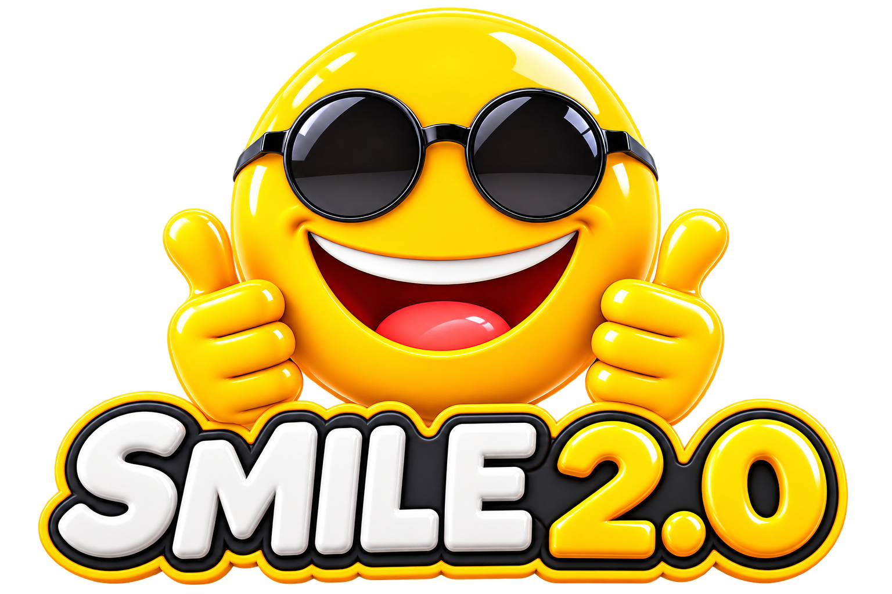
Simple Modern and Intuitive Language for Everyone
A readable language. A native compiler. A world taking shape.
Latest Progress · Earth Lab · Fire Lab · Water Lab · Sin Star I Trailer & Story · Build & Explore · Work With Sin
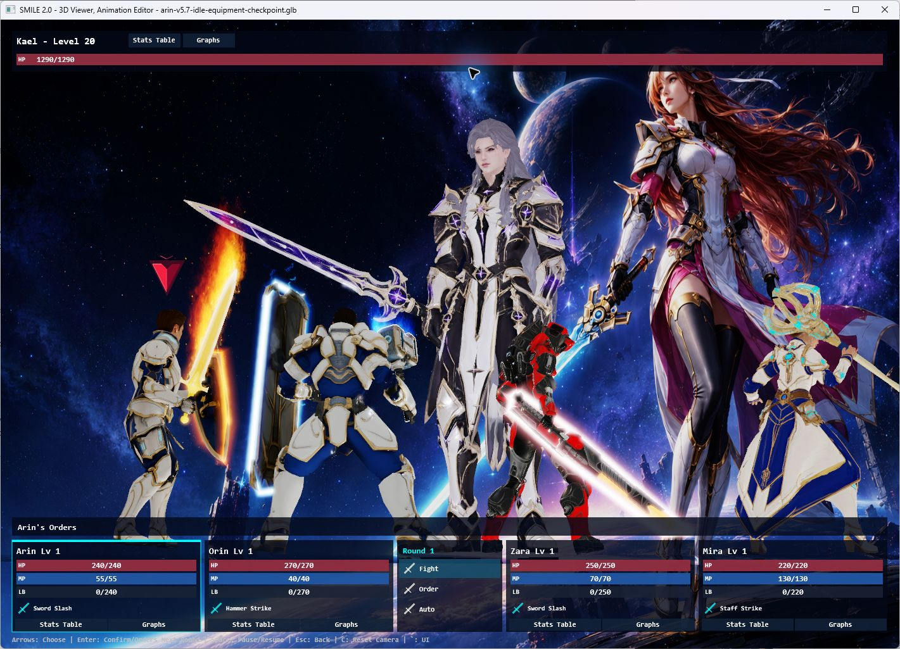
Latest native Battle System: four heroes, one towering opponent, and the language and tools behind the scene.
SMILE 2.0 is a programming language and game-development toolchain created by Louiery R. Sincioco (Sin), with Codex collaboration. It brings together a shared language and semantic model, a native Windows compiler, rendering and audio runtimes, reusable SMILE libraries, and Visual Studio integration.
Its current creative focus is Sin Star I, a science-fantasy RPG in development. Much of the hands-on progress happens in the 3D Character Viewer and Animation Editor: bringing characters to life, refining equipment and poses, building reusable effects, and turning party choreography into interactive battles.
Development snapshot: September 24, 2026. The thirteen Viewer and VFX Lab screenshots on this page were captured from the native applications for this update. The story illustrations and trailer below are separate creative-production material. Sin Star I is a work in progress.
Latest progress — the native Battle System
The Viewer now opens directly into a battle against Kael, with Arin, Orin, Zara and Mira as the party. This latest slice adds playable decisions to the existing character, animation and effects workflow:
- Party orders: select attacks, magic, healing targets, Defend, Limit Break or Run.
- Automatic rounds: repeat remembered orders, then request new ones at a round boundary.
- Battle feedback: HP, MP, Limit Break gauges, floating damage/healing and a crystal order pointer.
- Progression: EXP rewards, level growth, statistics tables and graphs for the current session.
- Presentation: a cinematic opening, action cameras, victory animations and automatic encounter restarts.
- Hands-on inspection: pause the battle while keeping smooth camera pan, orbit and zoom available.
The Battle System and Kael Party are distinct views: one runs interactive combat; the other demonstrates the character choreography and effects.
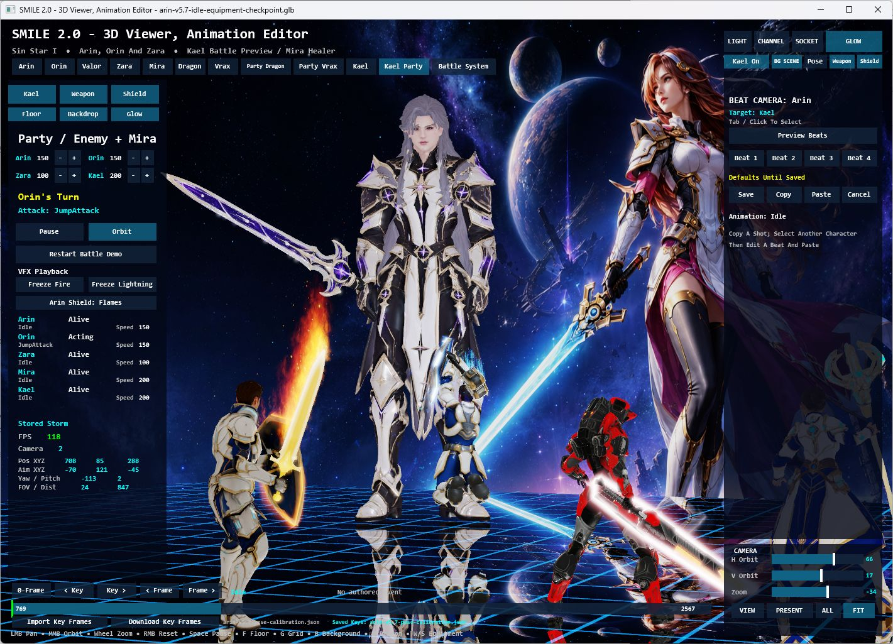
Kael Party in the native Viewer. The editor exposes playback, camera beats, equipment and effects alongside the live scene.
Explore the Battle System and controls · Read the ownership and validation notes
Earth Lab — giving Kael the power to move stone
Boulder Hurl. Stone Volley. Fault Line. The new native Earth Lab pairs Kael's planted stances and two-handed casts with lifted rocks, flying fragments, dust, impact cues and a reflective arena. His sword disappears during the cast so the motion reads clearly, then returns for normal sword animation.
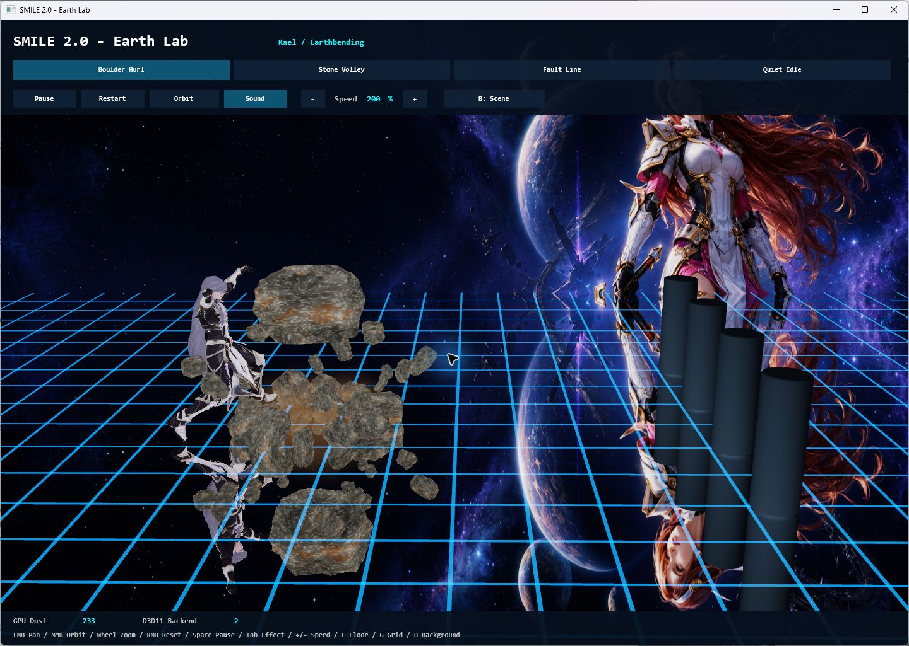
Boulder Hurl — body motion, stone lift and reflected geometry in the native renderer.
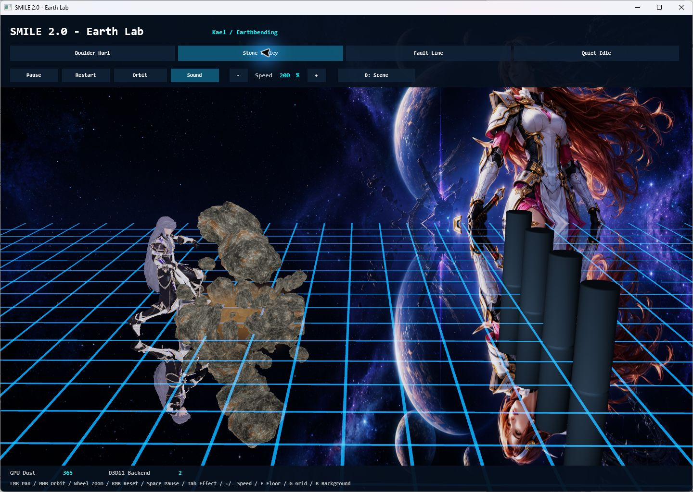
Three successive thrusts send stone toward a selected target.
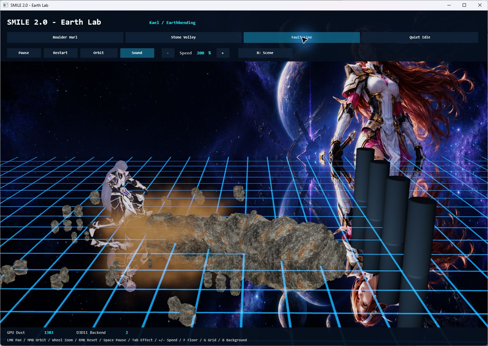
A downward strike drives the effect across the arena.
This is reusable SMILE code: the Earth effect owns rocks and dust independently of Kael, while his adapter supplies animation timing and targets. The same casts are already used in the native Viewer and Sin Star I's Kael presentations.
Explore Earth Lab and its controls · Inspect the shared Earth effect
Fire Lab — choreographing flame
Ember Strikes. Flame Sweep. Inferno Blast. The native Fire Lab connects Kael's punches, sweeping kick and two-handed release to jets emitted from his animated hands and foot. Bright flame cores, embers, heat distortion and cooling smoke make each motion visible across the reflective arena.

A low lunge and two-handed release drive a broad jet toward the targets.
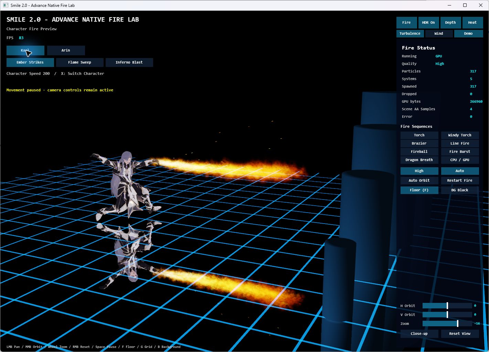
Chambered punches send fire forward from the animated hands.
The Lab also previews Arin's sword and shield flames and standalone effects such as torches, fireballs and dragon breath. Playback can pause while the camera stays active; quality, wind, turbulence and CPU/GPU controls support focused inspection. Shared fire emitters own the effect resources, while character adapters provide the attachment positions and attack timing.
Current status: Kael's three Fire attacks are native Lab previews. Their adoption into his Character Viewer and Sin Star I battle rotations is pending.
Explore Fire Lab and its controls · Inspect the shared fire emitter
Water Lab — shaping flow and impact
Water Whip. Serpent Orbit. Tidal Surge. Water winds around Kael before following his arm sweeps and torso turns toward a target. The native Water Lab brings the animation, translucent water surfaces, spray and reflections together, with a choice of standard and Realistic Water appearances.
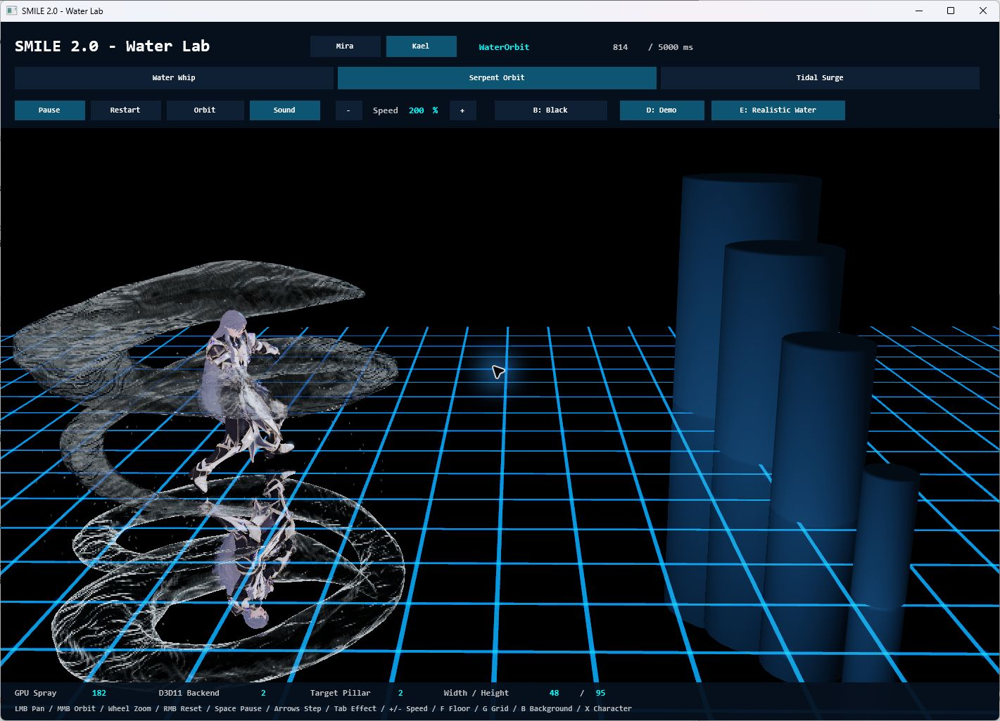
Coiling water surrounds the caster, shown with Realistic Water enabled.
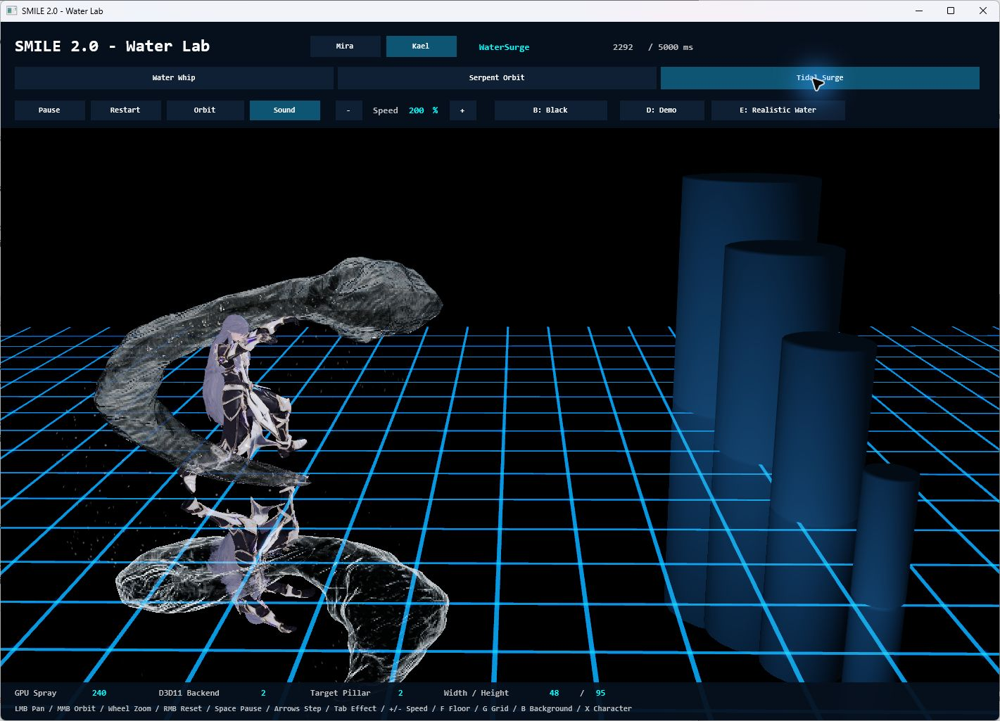
A broad curved flow follows the cast before reaching the selected pillar.
Impacts can split around the smaller cylindrical targets and reunite behind them; the largest target uses a crown splash. These are authored real-time effects with explicit target bounds. The Lab also retains Mira's eight effect previews and provides pause, 100 ms stepping, speed controls and a live clip clock for inspection. Shared water modules own flow, impact geometry and spray independently of the actor.
Current status: Kael's three Water casts are already used in the native Character Viewer and Sin Star I's normal/Earth/Water party rotation.
Explore Water Lab and its controls · Inspect the shared water effect
Kael — from character package to elemental opponent
Kael's current native package brings together sixteen animation clips, a silver-haired character, a fitted sword, and separate solo and boss presentations. The Kael Party demo alternates sword attacks with Earth and Water casts, using his own assets and timing.
| Element | Current native progress |
|---|---|
| Earth | Boulder Hurl, Stone Volley and Fault Line in Earth Lab, the Viewer and Sin Star I. |
| Water | Water Whip, Serpent Orbit and Tidal Surge in Water Lab, the Viewer and Sin Star I. |
| Fire | Ember Strikes, Flame Sweep and Inferno Blast in a separate Fire Lab preview; adoption into Kael's Viewer/game rotation is pending. |
Kael's versioned package · Water Lab · Fire Lab
Vrax — a different kind of boss encounter
Vrax brings a mechanical silhouette, 24 animation clips, six attack variants, orange fire breath and blue-white arm lightning. His individual preview and party encounter make it possible to inspect animation, targeting, effects and attack sound cues in context.
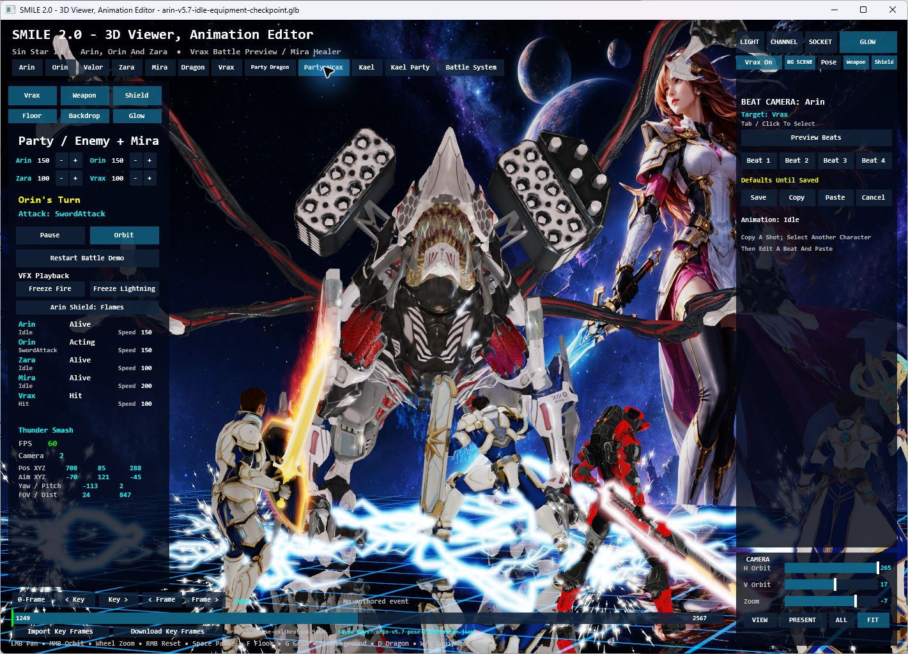
Party Vrax — character scale, equipment effects, lightning and reflections working together.
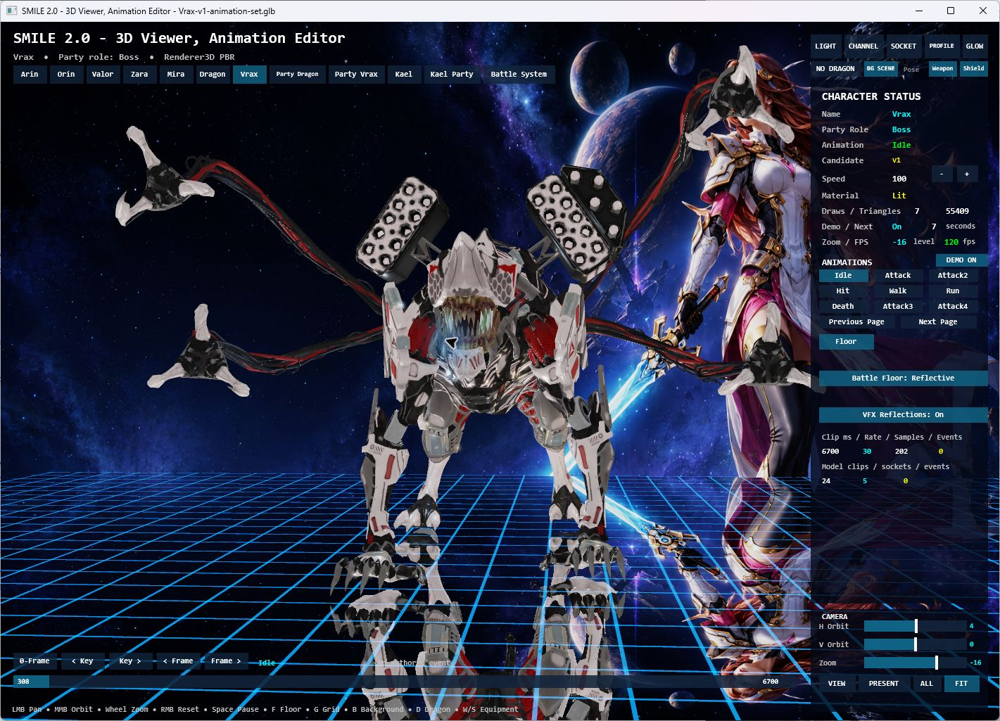
Vrax's individual animation view, with clip selection, playback information and camera controls.
Explore Vrax's effects · Read the asset and audio integration journey
The Red Dragon — animation, fire and party reactions
The Red Dragon remains a living test of the whole scene: wings and claws, head and mouth targeting, breath and fireball effects, defensive reactions, and multiple independently animated heroes.
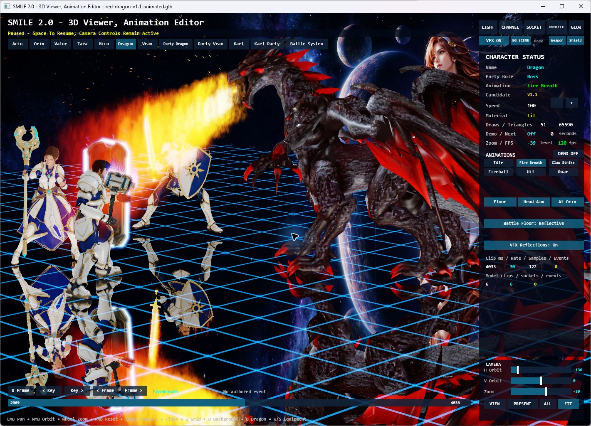
Fire breath in the native Viewer, paused for inspection with the camera still available.
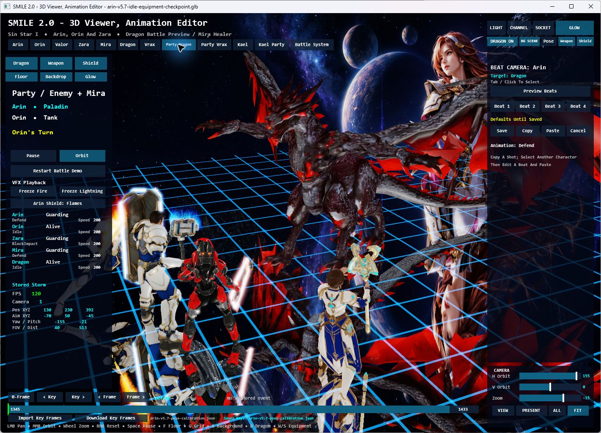
The current Party Dragon scene brings the four-character roster into the same shared arena.
The dragon uses a lightweight preview rig. The goal is to make each animation, attachment, effect and camera decision useful to the developing game, while keeping the editor focused and responsive.
Dragon package and rig notes · Character Viewer workflow
Sin Star I — from script to screen
Sin Star I's development also reaches beyond the runtime: an illustrated script, a visual storyboard, animated scene previews and video production explore the characters, worlds and emotional stakes of the RPG.
Watch the trailer

▶ Watch Sin Star — Trailer (2026)
The trailer presents Sin Star I's cinematic vision; the native screenshots above show current runtime development.
The illustrated story
Story illustration — the duel that follows Arin into his dreams.
Story illustration — A World Hurled: Aevos, the party, and Mira's shield.
The native game now lives at the root of the dedicated Sin Star I repository, which also contains the illustrated script, storyboard and production materials. Its current storyboard has 122 illustrations across 53 scenes, connected to script dialogue and scene navigation. The local creative workspace also supports animated image previews, clip variations and a Video Clips sequence-review view.
Explore the Script, Storyboard and Video Clips guide · Browse the production materials · Explore the native Sin Star I project
Video files stay outside Git. The trailer above is publicly watchable on YouTube; the story repository explains local playback and the available online versions.
What is being built underneath
The scenes above are the visible result of work across the full toolchain.
| Layer | What the repository demonstrates |
|---|---|
| Language and compiler | A shared lexer, parser, diagnostics, types and semantic model; readable BASIC-inspired source; native Windows compilation. |
| Runtime and rendering | Permanent 2D support alongside 3D characters, skeletal animation, materials, planar reflections, particles, input and audio. |
| Reusable SMILE libraries | Camera and arena controls, animation/equipment workflows, effects, UI and RPG systems with explicit state ownership. |
| Visual Studio tooling | SMILE projects, compiler integration, language services, templates and a VSIX. |
| Asset and editing workflow | Versioned character packages, grounding checks, sockets, timeline inspection and saved pose corrections for supported characters. |
| Creative production | Sin Star I's script, storyboard, character direction, scene previews and trailer. |
Windows native development is priority one. Web compilation is an existing second target sharing the language front end. Recent native features shown here must not be assumed to have reached Web: all Web adoption, publication and browser validation are on hold.
SMILE 2.0 Studio status
Studio has a bounded hosted Viewer and Character Editor using the shared Viewer session. Studio creation, development, final interaction acceptance and next phases remain on hold. The standalone Viewer and labs shown above are the current working tools. General scene documents, reusable saved-effect/audio documents, declarative scene authoring and faithful scene export remain planned.
The accepted Studio architecture and working visual design describe the direction, not completed product capabilities. Future work resumes only on Sin's direction; see the Studio implementation status and current adoption checkpoint.
Build and explore
The core Windows toolchain uses Windows components and Visual Studio tooling.
Start with Windows 11 x64, PowerShell 7, .NET SDK 10.0.400 (selected by
global.json), and Visual Studio 2026 with Desktop development with C++ and
Visual Studio extension development.
Check prerequisites, then build the compiler and extension:
pwsh -NoProfile -ExecutionPolicy Bypass -File scripts\doctor.ps1
.\scripts\build.cmd
Primary outputs:
artifacts\compiler\smilec.exe
artifacts\vsix\Smile.VisualStudio.vsix
For the native character workflow, follow the Viewer build and asset-preparation guide. Some featured characters use locally licensed source assets that are not included in Git; the guide explains the roster and preparation requirements. With those prerequisites prepared:
pwsh -File tools\Character3DViewer\Launch.ps1 -Build
Language documentation · Libraries · Architecture · Earth Lab build and controls
Work with Sin
Louiery R. Sincioco (Sin) creates and programs SMILE 2.0 and leads Sin Star I's creative direction, with Codex collaboration. This repository makes the work visible from language design and low-level rendering through artist-facing tools and game presentation.
- Employers and clients: explore the compiler, runtime, tooling and native demonstrations as examples of Sin's engineering work. Get in touch about roles or projects that need those skills.
- Partners and investors: discuss the long-term direction for an approachable programming language, creative tools and the developing Sin Star I experience.
- Contributors: review the architecture and current task boundaries, then discuss a focused improvement to the language, native tools, documentation or character workflow.
Interested in working together? Email Sin or connect on LinkedIn.
GitHub · YouTube · Facebook · TikTok
SMILE 2.0 — Simple Modern and Intuitive Language for Everyone.
Copyright(c) 2026. All rights reserved. Programmed by Louiery R. Sincioco (Sin).